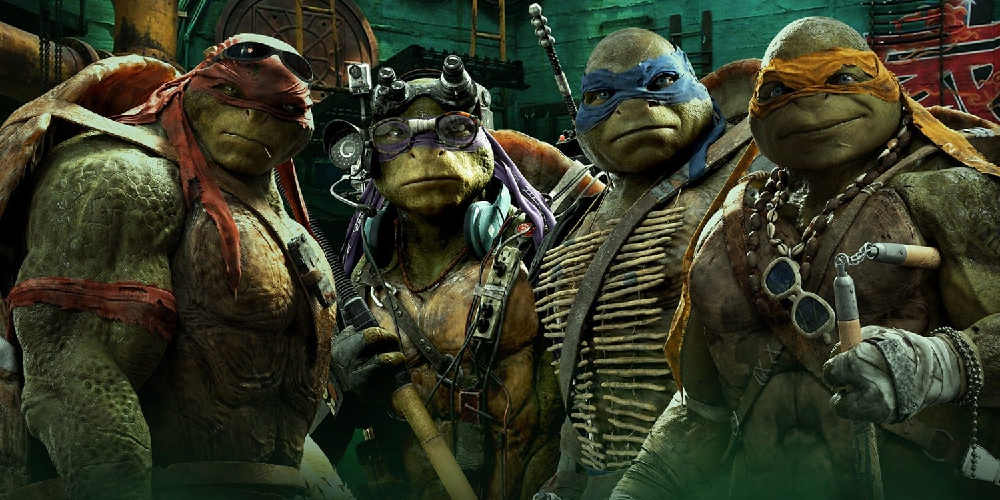
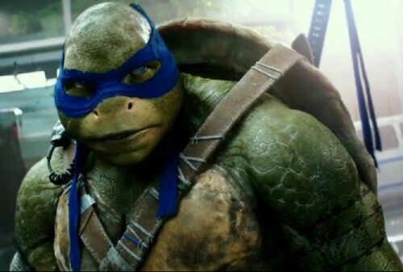
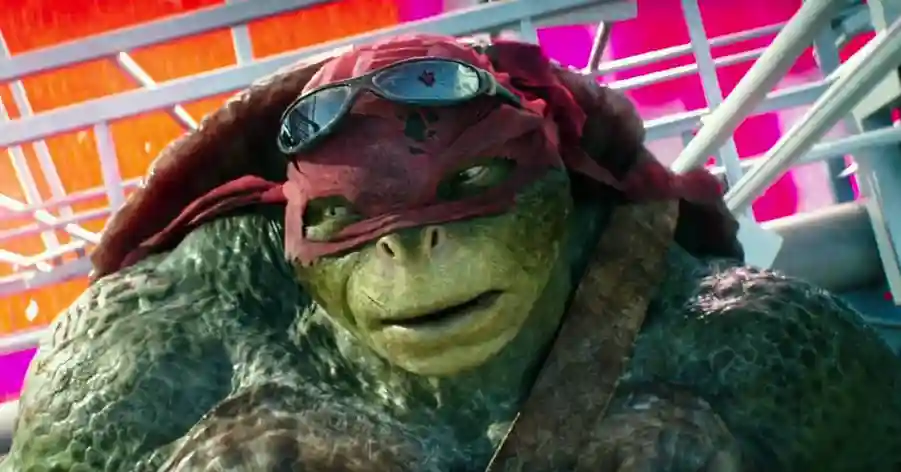
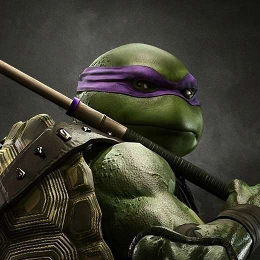
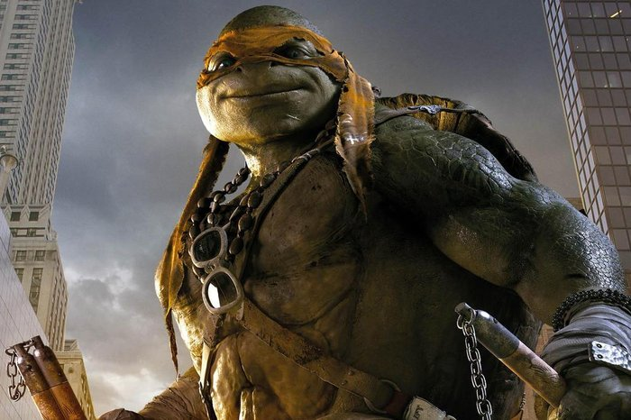

Um pouco da História sobre as Tartarugas Ninjas:
As Tartarugas Ninja (Teenage Mutant Ninja Turtles, abreviado como TMNT) são quatro tartarugas antropomórficas batizadas com o nome de artistas italianos do Renascimento e treinadas na arte do ninjutsu por um rato sensei antropomórfico chamado Splinter. A partir da sua casa, os esgotos de Nova Iorque, batalham contra criminosos, senhores demoníacos, criaturas mutantes e alienígenas invasores, enquanto tentam permanecer escondidos da sociedade. Num ou noutro ponto e em quase todas as histórias TMNT, o Destruidor, líder do grupo malfeitor Clã do Pé, é o arqui-inimigo de Splinter e das Tartarugas Ninja.

Criador das Tartarugas Ninjas
Criadas por Kevin Eastman e Peter Laird, a sua primeira aparição foi em 1984 na revista Teenage Mutant Ninja Turtles #1, publicada pela Mirage Comics. Mais tarde, as Tartarugas Ninja foram para séries animadas de televisão, filmes, videojogos, brinquedos e muitos outros produtos. Durante o pico da popularidade da franquia, entre o final da década de 1980 e início de 1990, ganharam fama e sucesso a nível mundial.
Tartarugas:
Leonardo
Leonardo é o líder tático, corajoso e dedicado, cujo nome deriva do polímata Leonardo da Vinci. Usa uma máscara azul e detém duas espadas longas — katanas e ninja-tōs unidas. Muitas vezes, ele carrega o peso da responsabilidade por seus irmãos, o que geralmente o leva a brigar com Raphael.

Rafael
Raphael é o bad boy com uma máscara vermelha e um par de sai que foi nomeado em homenagem ao pintor e arquiteto Rafael. É forte e tem uma natureza agressiva, raramente hesitando em desferir o primeiro golpe. Sua personalidade pode ser feroz e sarcástica, proporcionando o humor sem expressão.

Donatello
Donatello é o gênio tecnológico com uma máscara roxa e um bō que foi nomeado em homenagem ao escultor Donatello. É, talvez, a Tartaruga Ninja menos violenta, preferindo usar seu conhecimento para resolver os conflitos, mas sem hesitar em defender seus irmãos.

michelangelo
Michelangelo é um brincalhão de espírito livre fácil de lidar. Ele usa uma máscara laranja e empunha um par de nunchaku. É o mais imaturo e fornece o alívio cômico, tendo um lado aventureiro juntamente com um amor por pizza. Seu nome deriva do pintor, escultor, arquiteto, poeta e engenheiro Michelangelo.
